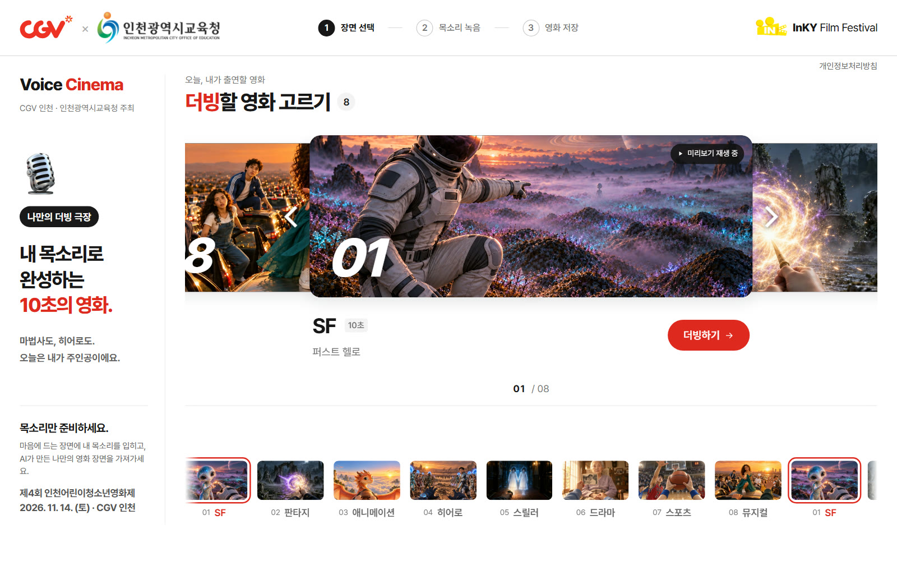
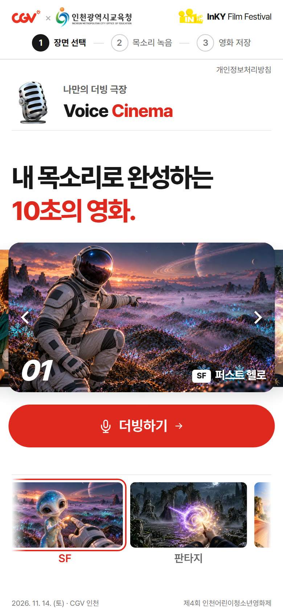
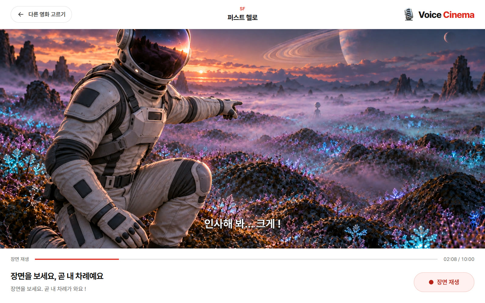
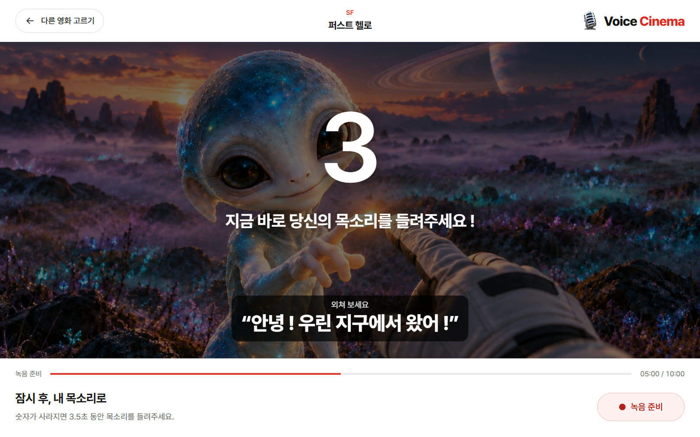
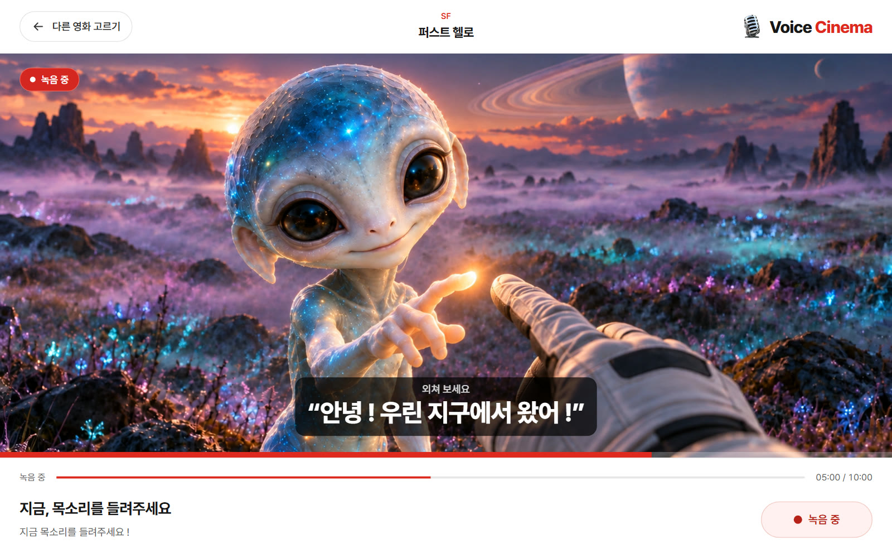
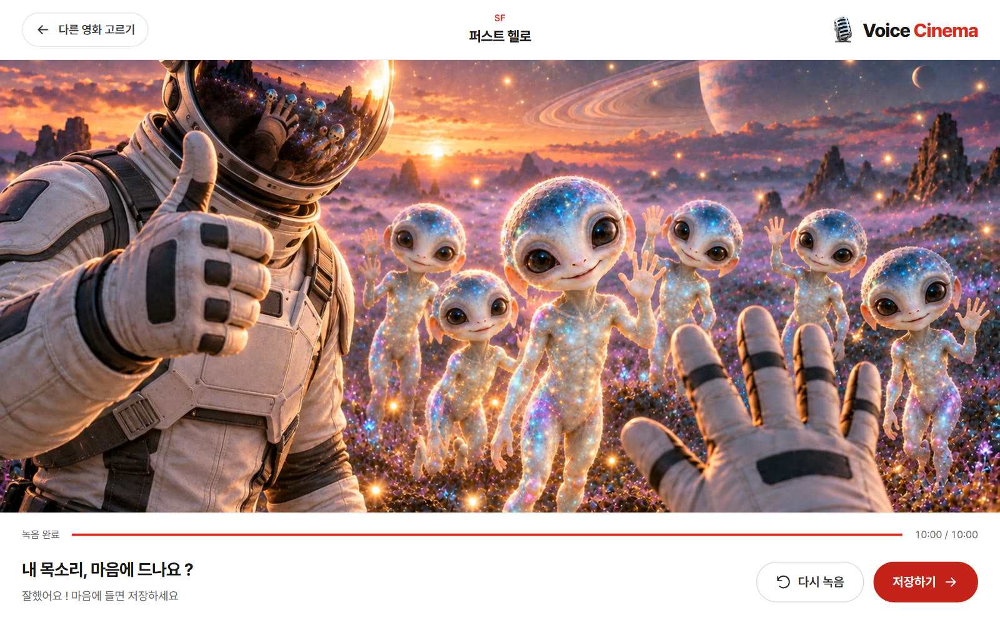
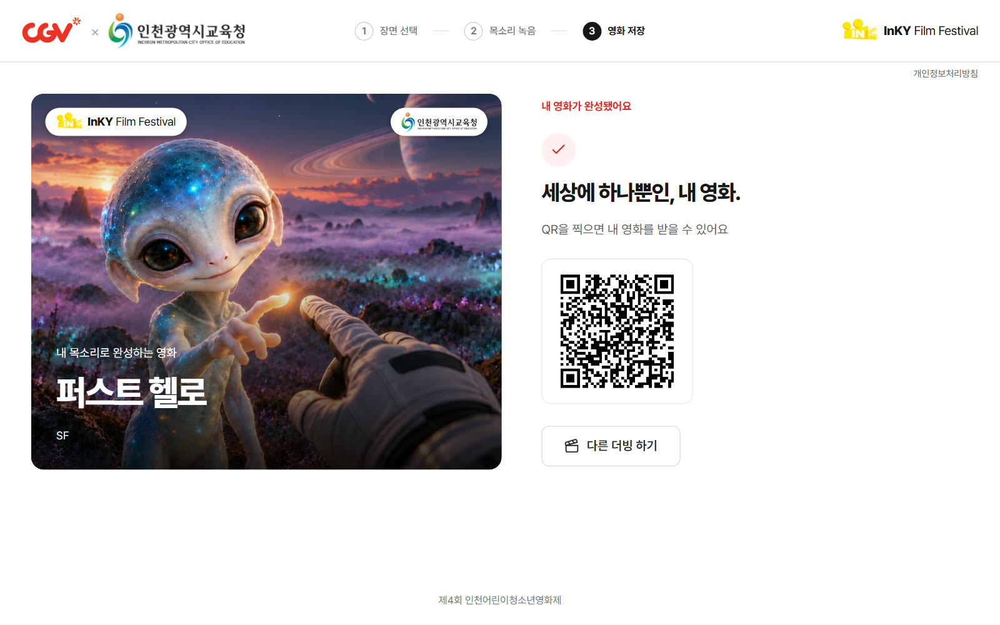
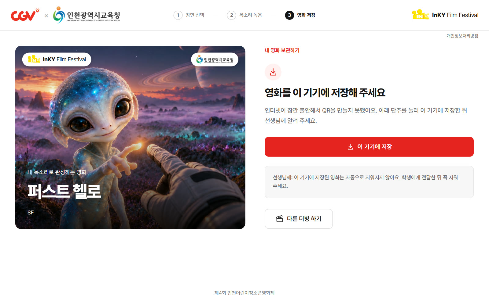

제4회 인천어린이청소년영화제 · InKY 놀이터 체험 부스
설치·운영 설명서
영화 명장면의 가장 긴박한 순간, 내 목소리로 외쳐 나만의 10초 영화를 완성해요.
학생이 8개 장면 중 하나를 고르면 장면이 흐르다 가장 긴박한 순간(5초)에 멈춥니다. 화면의 신호에 맞춰 학생이 3.5초 동안 외치면, 그 목소리가 들어간 채로 장면이 끝까지 이어져 정확히 10초짜리 영화가 됩니다. 저장하면 화면에 QR이 뜨고, 학생은 자기 휴대폰 카메라로 찍어 영화를 받아 갑니다.


| 구분 | 무엇 | 참고 |
|---|---|---|
| 필수 | 노트북 또는 안드로이드 태블릿 | Chrome 권장. 아이패드(Safari)는 마이크 호환 문제로 권장하지 않습니다 |
| 필수 | 인터넷(행사장 와이파이 또는 휴대폰 핫스팟) | 저장·QR 전달에 필요. 끊겨도 체험은 계속되고 영상은 기기에 저장됩니다(5장) |
| 권장 | USB 마이크 또는 헤드셋 | 행사장이 시끄러우면 목소리가 또렷해집니다 |
| 권장 | 스피커 또는 기기 음량 확인 | 장면에 배경음과 상대 대사가 있습니다. 녹음하는 3.5초 동안은 장면 소리가 멈춥니다 |
| 단계 | 학생이 하는 것 | 화면 | 운영자 안내 예시 |
|---|---|---|---|
| ① 장면 고르기 | 8개 장면 중 하나를 누름 | 녹음실로 들어가 장면이 멈춘 채 기다림 | «어떤 영화의 주인공이 되어 볼까요 ?» |
| ② 장면 시작 | «장면 시작»(가운데 ▶와 «미리보기»는 녹음 없이 장면만 봄) | 장면이 소리와 함께 흐르고, 상대 인물이 한마디 함(자막) | «장면이 멈추면 바로 외쳐요 !» |
| ③ 내 차례 | 준비 | 5초에 멈춤 → «이제 당신의 차례입니다 !» → 3·2·1 «지금 바로 당신의 목소리를 들려주세요 !», 함께 «외쳐 보세요 “…”» | «셋, 둘, 하나 !» |
| ④ 외치기 | 3.5초 동안 크게 외침 | «녹음 중»과 남은 시간 막대 | «크게 !» |
| ⑤ 이어 보기 | 봄 | 내 목소리가 들어간 채로 장면이 끝까지 이어짐 | — |
| ⑥ 확인 | «다시 녹음» / «저장하기» | «내 목소리, 마음에 드나요 ?» | «마음에 들 때까지 다시 해도 돼요» |
| ⑦ 받기 | 휴대폰 카메라로 QR을 찍음 | «세상에 하나뿐인, 내 영화.»와 QR | «11월 30일까지 받을 수 있어요» |
다음 학생은 «다른 더빙 하기»를 누르면 처음 화면으로 돌아갑니다. 앞 학생의 녹음은 남지 않습니다.






| 화면 | 뜻 | 운영자가 할 일 |
|---|---|---|
| «세상에 하나뿐인, 내 영화.» + QR «클라우드에 저장되었습니다 (이 QR/링크를 아는 사람은 누구나 볼 수 있어요, 11/30까지)» | 정상. 학생 휴대폰 어디서든 QR이 열립니다 | 없음. 11월 30일까지만 받을 수 있다고 알려 줍니다 |
| «영화를 이 기기에 저장해 주세요» + «이 기기에 저장» | 인터넷 문제로 자동 전달이 안 됨(자동으로 두 번 더 시도한 뒤) | «이 기기에 저장»을 누르면 기기의 다운로드 폴더에 Voice Cinema_장르.mp4로 저장됩니다. 학생에게 전달한 뒤 그 파일을 꼭 지웁니다 — 자동 삭제 대상이 아닙니다. 전달 방법 [확인 — 운영진이 정함] |
Voice Cinema_장르.mp4 파일이 있으면 모두 지웁니다(인터넷이 끊겼을 때 저장된 학생 영상)| 증상 | 원인 | 조치 |
|---|---|---|
| «마이크 접근이 차단됐어요» | 마이크 허용 창에서 「차단」을 누름 | 주소창 왼쪽 자물쇠 → 사이트 권한 → 마이크 「허용」 → 다시 «장면 시작» |
| «연결된 마이크를 찾지 못했어요» | 마이크가 없거나 빠짐 | 마이크·헤드셋을 다시 꽂고 다시 «장면 시작» |
| «마이크를 열지 못했어요» | 다른 앱이 마이크를 쓰는 중 | 화상회의·녹음 앱을 닫고 다시 «장면 시작» |
| 장면 소리가 안 들림 | 기기 음량·음소거 | 기기 음량을 올립니다. 녹음하는 3.5초 동안 장면 소리가 멈추는 것은 정상입니다 |
| 첫 화면이 느리게 뜸 | 예열 전 기기·느린 인터넷 | 첫 화면이 다 뜰 때까지 기다립니다. 행사 주간에 예열해 두면 생기지 않습니다 |
| «이 기기에 저장»이 뜸 | 인터넷 끊김 | 5장대로 저장 → 전달 → 파일 삭제 |
| «고쳤다»는데 옛 화면이 보임 | 기기에 남은 옛 화면 | 비공개(시크릿) 창으로 열면 바로 최신 화면이 뜹니다 |
Voice Cinema 2.0 · 이 설명서의 원본은 저장소 _docs/ops/print/operator-manual.html이고 node tools/build-print.mjs로 PDF를 뽑습니다.